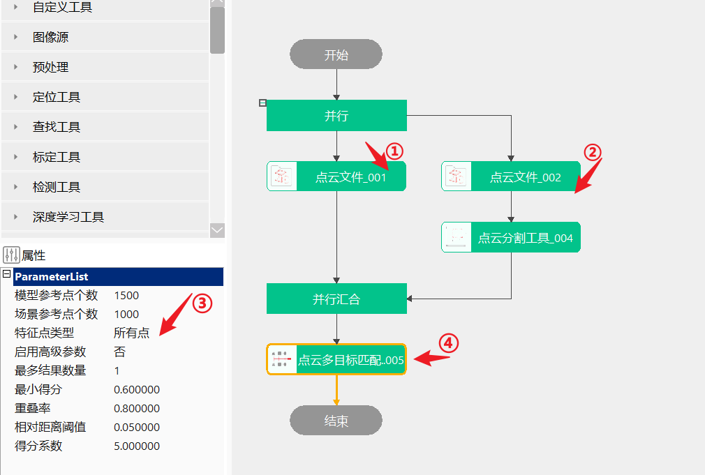

Công cụ khớp đa mục tiêu đám mây điểm dùng để khớp đám mây điểm mô hình với đám mây điểm cảnh, nhằm thu được các đám mây điểm trong cảnh có độ tương đồng cao với đám mây điểm mô hình.
Chủ yếu dùng để khớp vật liệu trong các dự án gắp không theo thứ tự hoặc dẫn hướng, nhằm thu được vị trí gắp hoặc dẫn hướng phù hợp nhất.
Không có
Quy trình thực thi công cụ: tải đám mây điểm mô hình→tải đám mây điểm cảnh→thiết lập tham số khớp→thực hiện khớp.

| Lưu ý |
|---|
| 1、Trong quá trình khớp, cần đảm bảo vector pháp tuyến của đám mây điểm cảnh và đám mây điểm mục tiêu nhất quán, nếu không kết quả khớp sẽ không hợp lệ |
| Tên tham số | Mô tả tham số |
|---|---|
| Đám mây điểm mô hình đầu vào | Đám mây điểm mô hình đầu vào |
| Đám mây điểm cảnh đầu vào | Đám mây điểm cảnh đầu vào |
| Tên tham số | Mô tả tham số |
|---|---|
| Số lượng điểm tham chiếu mô hình | Phạm vi giá trị [10, 2000]，mặc định là 1000；tham số này ảnh hưởng đến độ chính xác căn chỉnh thô, khuyến nghị số điểm tham chiếu khoảng 1000, nếu hiệu quả không lý tưởng có thể cân nhắc tăng lên |
| Số lượng điểm tham chiếu cảnh | Phạm vi giá trị [10, 2000]，mặc định là 1000；tham số này ảnh hưởng đến độ chính xác căn chỉnh thô, khuyến nghị số điểm tham chiếu khoảng 1000, nếu hiệu quả không lý tưởng có thể cân nhắc tăng lên |
| Loại điểm đặc trưng | Chia thành tất cả điểm và điểm biên |
| Số điểm tìm kiếm lân cận KNN | Phạm vi giá trị [3,100]，mặc định là 20 |
| Ngưỡng biên | Phạm vi giá trị [-10.0, 10.0]，mặc định là 1 |
| Bật tham số nâng cao | Có bật thiết lập tham số nâng cao hay không |
| Đảo vector pháp tuyến cảnh | Khi vector pháp tuyến của cảnh không nhất quán với mô hình thì cần đảo chiều |
| Bước lấy mẫu điểm cảnh | Phạm vi giá trị [-1,100]，mặc định là 3 |
| Bước lấy mẫu khớp dày đặc | Phạm vi giá trị [-1,100]，mặc định là 3 |
| Số lần lặp khớp thưa | Phạm vi giá trị [1,200]，mặc định là 50 |
| Góc tối thiểu khớp thô | Phạm vi giá trị [0,90]，mặc định là 5 |
| Tối ưu sàng lọc tư thế khớp thô | Chiến lược tối ưu hiệu suất, sau khi bật và điều chỉnh các tham số liên quan đến chiến lược, bên trong sẽ tối ưu tư thế đầu ra của khớp thô |
| Khớp thưa sử dụng kết quả có sai lệch lặp tối thiểu | Chiến lược tối ưu độ chính xác, sau khi bật và điều chỉnh các tham số liên quan đến chiến lược, bên trong sẽ tối ưu tư thế đầu ra của khớp thưa |
| Sàng lọc góc nghiêng | Sau khi bật, có thể lọc các tư thế có góc nghiêng lớn |
| Sàng lọc tỷ lệ che khuất | Sau khi bật, có thể lọc tư thế bị che khuất |
| Góc nghiêng tối đa | Phạm vi giá trị [0,90]， giá trị mặc định là 45.0 |
| Tỷ lệ che khuất tối đa | Phạm vi giá trị [0,1]， giá trị mặc định là 0.2 |
| Có bật thoát khi quá thời gian hay không | Có bật thoát khi quá thời gian hay không |
| Giới hạn thời gian chờ | Phạm vi giá trị [1, 3600.0]， giá trị mặc định là 30.0 |
| Số lượng kết quả tối đa | Phạm vi giá trị [1,10000]，mặc định là 1；số lượng kết quả khớp được xuất ra |
| Điểm tối thiểu | Phạm vi giá trị [0,1]， giá trị mặc định là 0.4；chỉ các kết quả lớn hơn điểm này mới được xuất ra |
| Tỷ lệ chồng lấp tư thế tương tự | Phạm vi giá trị [0,1]，mặc định là 0.8；sau khi khớp, mức độ chồng lấp giữa mô hình và cảnh, lớn hơn giá trị này sẽ được mặc định là tư thế chồng lấp, chỉ chọn một trong số đó để xuất ra |
| Ngưỡng lọc tư thế tương tự | Phạm vi giá trị [0.0001, 1]，mặc định là 0.05；lọc các tư thế tương tự |
| Hệ số điểm | Phạm vi giá trị (0,50]， giá trị mặc định là 5.0 |
| Bật tính toán song song | Có bật tính toán song song hay không, khi chọn Có, thuật toán sẽ bật phương thức tính toán song song OpenMp, có thể tăng tốc độ tính toán, nhưng có thể xảy ra tình trạng thời gian xử lý không ổn định; khi chọn Không, thuật toán sẽ tắt tính toán song song OpenMp. |
| Phần trăm số luồng | Thiết lập phần trăm số luồng của tính toán song song, phạm vi hợp lệ là (0, 0.75]，tương ứng biểu thị phạm vi phần trăm (0%, 75%]. |
| Tên tham số | Mô tả tham số |
|---|---|
| Ma trận biến đổi đầu ra | Ma trận biến đổi cứng sau khi khớp |
| Mảng ma trận biến đổi đầu ra | Mảng ma trận biến đổi cứng sau khi khớp |
| Điểm tương ứng của kết quả | Điểm khớp, phạm vi giá trị [0,1] |
| Dữ liệu đám mây điểm đầu ra | Dữ liệu đám mây điểm sau khi mô hình được biến đổi |
| Tên tham số | Mô tả tham số |
|---|---|
| Ma trận biến đổi đầu ra | Ma trận biến đổi cứng sau khi khớp |
| Mảng ma trận biến đổi đầu ra | Mảng ma trận biến đổi cứng sau khi khớp |
| Điểm tương ứng của kết quả | Điểm khớp, phạm vi giá trị [0,1] |
| Dữ liệu đám mây điểm đầu ra | Dữ liệu đám mây điểm sau khi mô hình được biến đổi |
| Kết quả thực thi | Kết quả thực thi công cụ |
| Thời gian thực thi | Thời gian thực thi công cụ |
参见“\Samples\3D\点云\点云多目标匹配工具.gvp”。